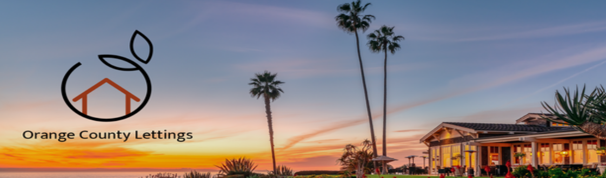

Technologies et Langages utilisés
– Python est le langage de programmation de choix pour ce projet. Sa version utilisée dans ce projet est Python 3.11.7
Ceci est une application web Django. Django est un framework Web écrit en Python qui vous permet de créer des applications sous le paradigme MVC (Model View Controller). Django propose une interface d’administration accessible via un navigateur web.
Docker et Docker Compose sont utilisés pour rendre cette application portable. Avec Docker, vous pouvez créer des conteneurs pour isoler vos applications et disposer d’environnements reproductibles sur différentes plateformes. Docker Compose vous permet de créer des définitions d’environnement pour votre application : au lieu d’écrire manuellement des commandes Docker complètes ou de créer des scripts shell, avec Docker Compose, vous pouvez définir tous les détails dans un fichier YAML et lancer les applications avec une seule commande. Vous pouvez également combiner plusieurs applications dans un seul fichier et les gérer en tant que dépendances d’une application principale.
Cette documentation a été rédigée via Sphinx. Sphinx vous permet de créer de belles pages de documentation et possède plusieurs fonctionnalités. L’une d’elles est la possibilité de lire des docstrings directement à partir du code Python, afin que vous puissiez documenter les API, les fonctions, les classes, etc…
Cadre du Projet
Le projet Orange County Lettings est un exemple de site web développé dans le cadre de la formation Développeur d’application Python chez OpenClassrooms. Cette application web, en phase d’expansion, utilise des technologies modernes et des pratiques de développement avancées.
Architecture et Conception
Le projet est structuré en plusieurs applications Django (lettings, profiles, oc_lettings_site), illustrant une architecture modulaire. Chaque application est conçue pour gérer des aspects spécifiques de la plateforme, comme la gestion des locations (lettings) et des profils utilisateurs (profiles), tout en partageant une base commune (oc_lettings_site).
Technologies Principales
Python 3.11.7 : Langage de programmation principal, réputé pour sa lisibilité et sa simplicité.
Django 5.0.1 : Framework web Python, choisi pour sa robustesse et sa capacité à accélérer le développement grâce à ses nombreuses fonctionnalités intégrées.
Docker : Utilisé pour la conteneurisation de l’application, garantissant la portabilité et la cohérence des environnements de développement, de test et de production.
Dépendances Clés
Django : Comme mentionné, le cœur du projet.
Sentry SDK : Intégré pour la surveillance et le suivi des erreurs, contribuant à la robustesse de l’application.
Pytest, Coverage : Utilisés pour les tests unitaires et la mesure de la couverture des tests, assurant la qualité et la fiabilité du code.
flake8, pylint : Outils de linting pour maintenir le code propre et conforme aux bonnes pratiques.
Sphinx : Pour la génération de cette documentation, permettant d’extraire et de compiler les docstrings du code.
Optimisation et Maintenance
La réorganisation du code en applications distinctes et la mise en œuvre d’une architecture modulaire améliorent non seulement la maintenabilité mais aussi la flexibilité du projet. Les migrations Django sont utilisées pour gérer les modèles de données, tandis que les tests unitaires et d’intégration assurent une qualité constante.
Surveillance et Gestion des Erreurs
L’intégration de Sentry pour le suivi des erreurs et l’utilisation de logs stratégiques renforcent la surveillance et la fiabilité de l’application.
CI/CD et Déploiement
Un pipeline CI/CD complet est mis en place, incluant la compilation, les tests, la conteneurisation avec Docker, et le déploiement sur une plateforme choisie (comme Render). Cette approche garantit un processus de déploiement fluide et fiable.
Conclusion et Prérequis
Compte GitHub avec accès en lecture à ce repository
Git CLI
SQLite3 CLI
Interpréteur Python, version 3.6 ou supérieure
Dans le reste de la documentation sur le développement local, il est supposé que la commande python de votre OS shell exécute l’interpréteur Python ci-dessus (à moins qu’un environnement virtuel ne soit activé). Cet ensemble de technologies et de pratiques illustre un engagement envers la qualité, l’efficacité et la scalabilité dans le développement de logiciels modernes. La documentation technique, créée avec Sphinx et hébergée sur Read The Docs, en est un témoignage supplémentaire, facilitant la compréhension et la collaboration future sur le projet.